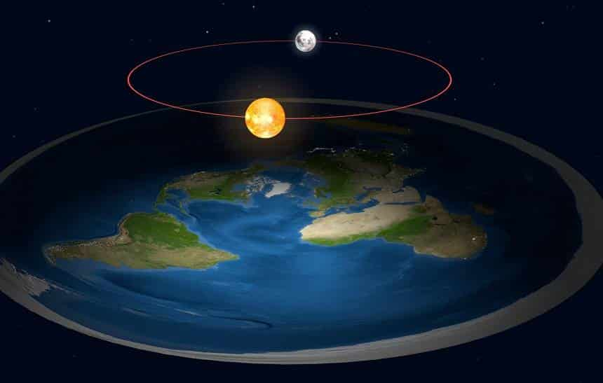

Na ciência, o negacionismo é definido como a rejeição de conceitos básicos, incontestáveis e apoiados por consenso científico em favor de ideias tanto radicais quanto controversas.
-Um dos exemplos é o Holocauso. Uma das teorias negacionistas de maior alcance e mais combatidas por especialistas da área é a que afirma que o Holocausto não aconteceu e que ele foi uma falsificação. Essa afirmação é falsa, uma vez que a historiografia possui amplas evidências, como documentos, edifícios, imagens, filmagens e depoimentos, que comprovam a existência do Holocausto. É bom lembrar que o Holocausto foi o genocídio de judeus realizado pelos nazistas durante a Segunda Guerra Mundial. Esse crime contra a humanidade foi executado de diversas maneiras, e os judeus foram mortos, principalmente, em campos de concentração ou então fuzilados por grupos de extermínio. Cerca de seis milhões de pessoas morreram. Os negacionistas do Holocausto afirmam que a morte de judeus não foi um genocídio, pois argumentam que não se tratava de uma política de extermínio e sim de um fruto da Segunda Guerra Mundial. Eles, ainda, questionam a existência de campos de concentração e das câmaras de gás — locais onde milhões de judeus foram assassinados. Para saber mais sobre esse acontecimento assustador da história europeia e, por isso mesmo, difícil de ser assumido, leia: Holocausto (mundoeducacao.uol.com.br)
-Outro exemplo são os Terraplanismo. Terraplanismo é um termo anti-científico e negacionista utilizado para explicar que a Terra é plana. É uma teoria conspiratória baseada em algumas passagens da Bíblia, em dados sem comprovação da ciência e na imaginação de seus adeptos. Aristóteles, em 350 a.C, já sabia que a Terra era um globo. O filósofo grego indicava que as constelações apresentavam visões diferentes dependendo da latitude. Na astronomia, o exemplo mais conhecido é o Big Dipper, agrupamento com sete estrelas que não pode ser visto abaixo de 25 graus Sul, mas pode ser observado em latitudes de 41 graus Norte. Com isso, comprova-se que a Terra é um globo, pois olhar "para o alto" significa realmente olhar na direção de uma camada de espaço diferente quando se está no hemisfério Norte ou Sul. Quando observamos um barco singrando na direção do horizonte, percebemos que ele desaparece gradualmente, do casco à ponta da vela, ou seja, de baixo para cima. Este fenômeno se dá porque a Terra é redonda. O navegador Fernão de Magalhães tinha apontado esse fenômeno no século XVI a partir da sua viagem de circunavegação. Apesar das comprovações científicas e até mesmo da observação natural de qualquer leigo, o terraplanismo persiste. Este conceito contrda-científico percorreu toda a Idade Média e aterrou o vasto conhecimento produzido na Grécia Antiga.wikipedia
